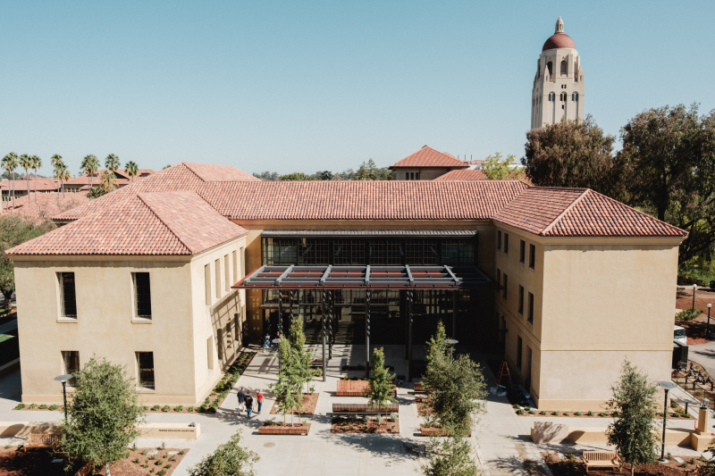
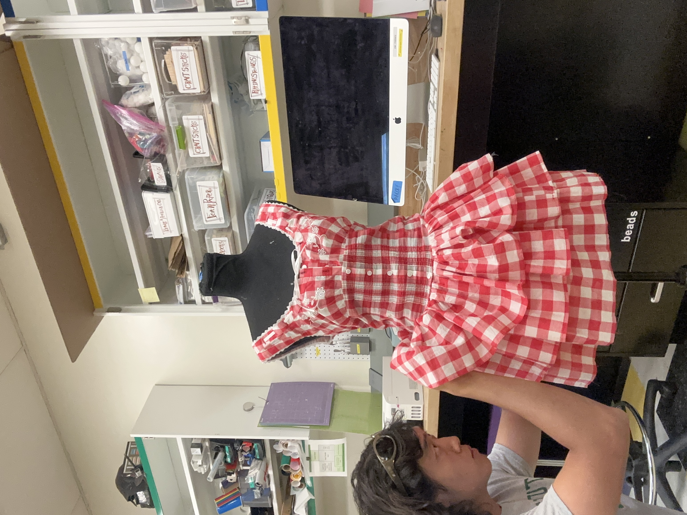
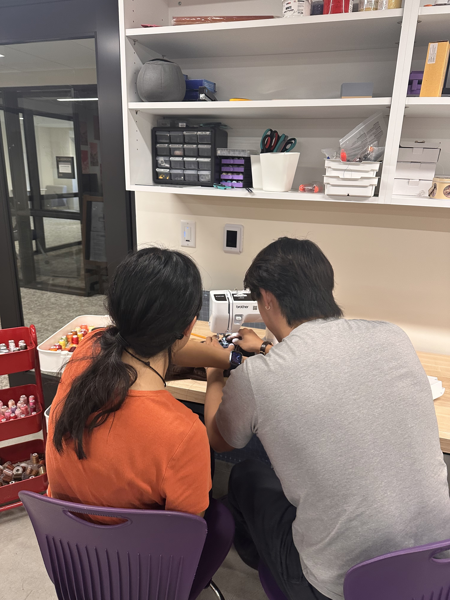
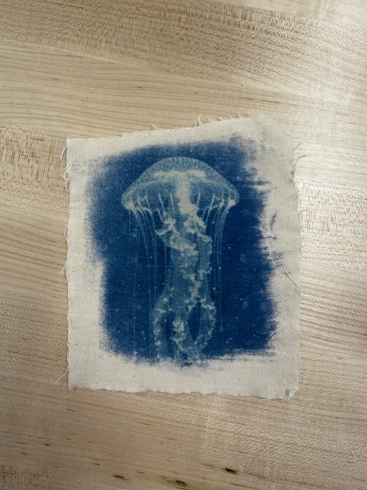

GSE Makery
The GSE Makery is a shared workshop at Stanford where students and researchers learn by building. As a textiles specialist, I teach sewing and garment construction and help people develop their ideas through making.


Working with textiles changed how I think about clothing, and teaching those skills to other people has been just as meaningful.
When people learn sewing or garment construction, they start paying attention to clothing differently. They notice material, fit, construction, and finish. They become more aware of the work behind the garments they wear every day and more thoughtful about the clothes they choose to buy and keep.
At the Makery, I work across sewing machines, sergers, embroidery machines, and garment construction tools. I support everyone from first-time sewists to students building advanced research and design projects.
Learning Through Making
I lead workshops on sewing, garment repair, and textile printing techniques. The work is rooted in my philosophy of learning by making. While people can learn by seeing, they learn far more by doing, experimenting, working directly with materials.
I believe hands-on creative work matters more now than ever as we accelerate toward an increasingly digital and immaterial world. Watching people realize they are capable of producing a unique, physical, and personal artifact from scratch is my favorite part of the job.


Once you learn how clothing is made, you start noticing the decisions behind every garment. Material, construction, fit, and finish. That shift in perspective is what I care about most.